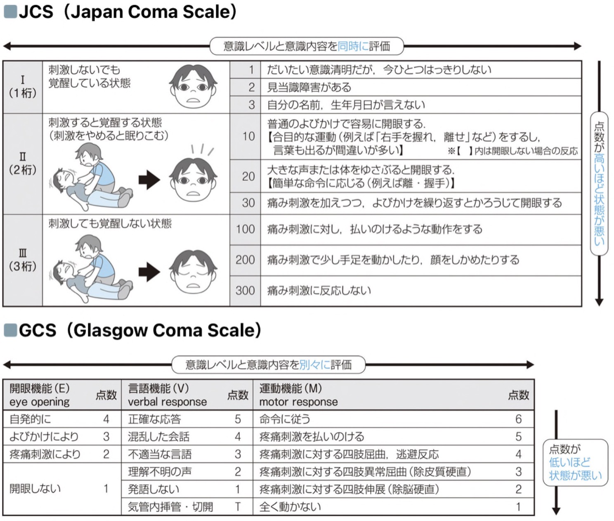

Hello
This is the home page.

画像診断
ニカルジピン10mg10mL：生食に混注して計50mL（5倍希釈）→5mL/h（1mg/h）．血圧に応じて5mL/hずつ調整．Max25mL/h
ノルアドレナリンは0.05γから開始．
持続点滴速度（γ計算）1γ=体重kgx0.06mg/hr
処方日数
必要な処方日数：－日分
間質性肺炎 L/D
KL-6, SP-D, ACE, リゾチーム, 抗核抗体, 抗DNA抗体, 抗Scl-70抗体, 抗Sm抗体, MPO-A, PR3-A, 抗ARS抗体,
抗RNP抗体, セントロメア抗体, 抗CCP抗体, Chlamydia pneumoniae IgA,G,M, 抗トリコスポロン抗体,
IgE, リウマトイド因子, IgG4, IgG,A,M, βDグルカン.
CHECK→HbA1c, B型肝炎, T-SPOT.